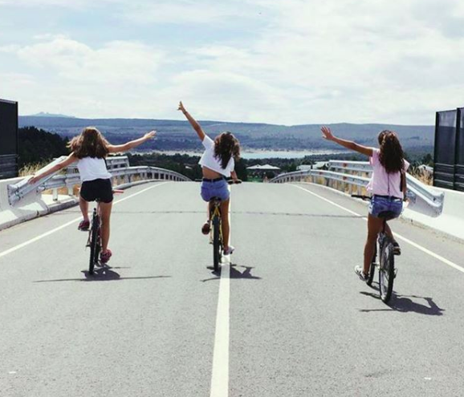
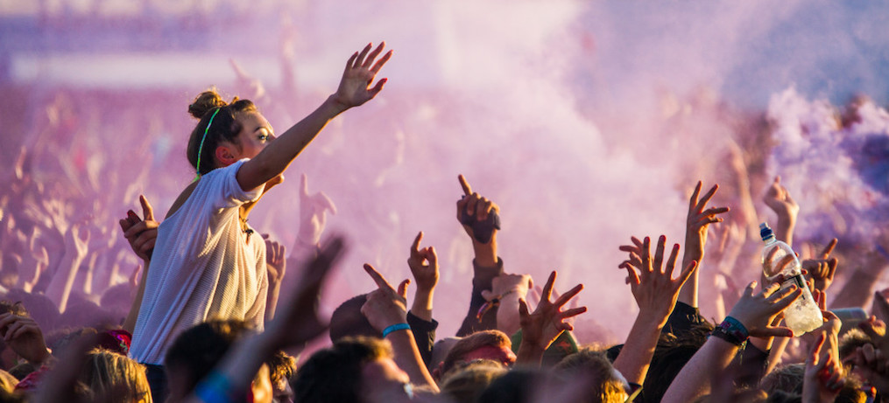
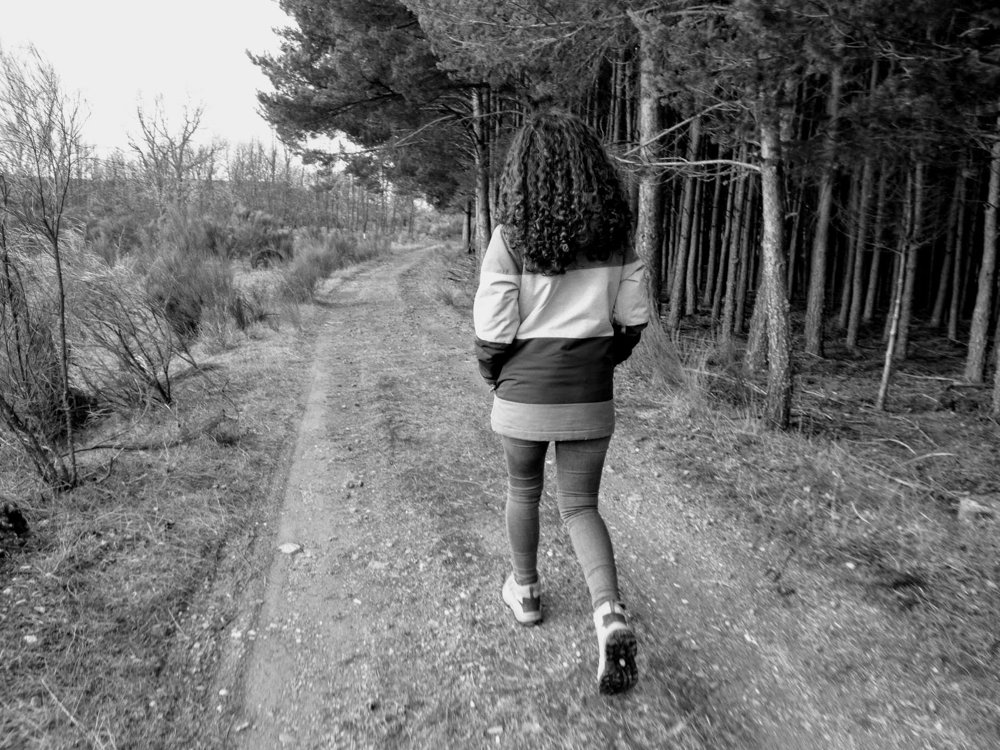

Enlaces relacionados:
MIS AFICIONES
 Una de mis aficiones favoritas es montar en bici, pero montar en bici por el campo, no por ciudad. Me gusta practicar este deporte porque me relaja y puedo disfrutar de la naturaleza, ya que es algo que me encanta. Cuando era pequeña solía salir todos los fines de semana con mis padres y con mi hermano, pero al ir creiciendo, eso ya no lo hacemos tan seguido como antes. Ahora, la epoca del año en la que más uso la bici es en verano, en el mes de Agosto, que estoy de vaciones en mi pueblo, y siempre vamos a visitar pueblos de al rededor o nuevos sitios haciendo rutas con la bici.
 Yo creo que la música es una de las mejores cosas que existe. La música es capaz de cambiar tu estado de ánimo de un momento a otro, de llevarte a recordar un momento excto en el que escuchaste una determinada canción. Además, hace que te identifiques con muchas de sus letras. Yo me paso el día escuchando música, música de estilos muy variados dependiendo de lo que este haciendo en ese momento, de mi estado de ánimo...
 Desde pequeña he hecho rutas con mis padres los fines de semana, visitabamos lugares o pueblos perdidos por la montaña. Ahora, solemos hacerlo algunos domingos. Preparamos unos bocadillos para comer y nos vamos a la sierra a descubrir nuevos sitios.